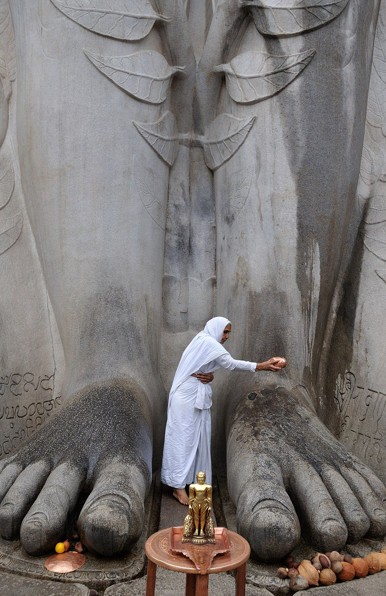

Chapter 8: Mahāvīra and the Tīrthaṅkara Tradition¶
8.1 The Antiquity of the Jain Tradition¶
The Jain tradition (Jaina Dharma) traces its origins far beyond the historical figure of Mahāvīra to a lineage of twenty-four Tīrthaṅkaras (“Ford-Makers”) who, in successive ages, have established the path of liberation. The Tīrthaṅkaras are called “ford-makers” because they establish a ford (tīrtha) — the fourfold community of monks, nuns, laymen and laywomen — across the river of suffering and rebirth, enabling others to cross.
Jainism, like Buddhism, recognises a series of teachers in past ages; it regards its teaching as eternal (śāśvata), periodically revealed anew by twenty-four Tīrthaṅkaras in each half-cycle of time (Table 8.1) (Dundas 2002; Jaini 1979). Historians accept Mahāvīra and, in all probability, Pārśva as historical; the earlier Tīrthaṅkaras belong to sacred history.
8.1.1 The Twenty-Four Tīrthaṅkaras¶
The Tīrthaṅkaras of the present descending half-cycle form a sacred history that runs from Ṛṣabha, who in Jain tradition taught humanity agriculture, crafts and writing at the end of an age of plenty, to Mahāvīra. The intervals between them, and their life-spans and statures, diminish as the age declines: the earlier Tīrthaṅkaras are given lives of immense length, while Pārśva is said to have lived a hundred years and Mahāvīra seventy-two. The twenty-second, Neminātha, is made a cousin of Kṛṣṇa, which links Jain sacred history to the epic world of the Mahābhārata. Because the images of all the Jinas show the same serene figure, seated or standing in meditation, each is identified in sculpture by an emblem (lāñchana) carved on the pedestal and, in painting, by a conventional colour (Table 8.1); several emblems differ between the two sects.
| No. | Name | Symbol | Colour | Notes |
|---|---|---|---|---|
| 1 | Ṛṣabhadeva (Ādinātha) | Bull | Golden | First Tīrthaṅkara; taught agriculture, crafts, and writing |
| 2 | Ajitanātha | Elephant | Golden | |
| 3 | Sambhavanātha | Horse | Golden | |
| 4 | Abhinandananātha | Monkey | Golden | |
| 5 | Sumatinātha | Curlew | Golden | |
| 6 | Padmaprabha | Lotus | Red | |
| 7 | Supārśvanātha | Swastika | Green | |
| 8 | Candraprabha | Moon | White | |
| 9 | Puṣpadanta | Crocodile (makara) | White | |
| 10 | Śītalanātha | Śrīvatsa | Golden | |
| 11 | Śreyāṃsanātha | Rhinoceros | Golden | |
| 12 | Vāsupūjya | Buffalo | Red | |
| 13 | Vimalanātha | Boar | Golden | |
| 14 | Anantanātha | Hawk | Golden | |
| 15 | Dharmanātha | Vajra | Golden | |
| 16 | Śāntinātha | Deer | Golden | |
| 17 | Kunthunātha | Goat | Golden | |
| 18 | Aranātha | Nandyāvarta | Golden | |
| 19 | Mallinātha | Water jar | Blue | Female Tīrthaṅkara (Śvetāmbara tradition) |
| 20 | Munisuvrata | Tortoise | Black | |
| 21 | Naminātha | Blue lotus | Golden | |
| 22 | Neminātha (Ariṣṭanemi) | Conch | Black | Cousin of Kṛṣṇa (traditional) |
| 23 | Pārśvanātha | Serpent | Blue | Probably historical (traditional dates 877–777 BCE) |
| 24 | Mahāvīra (Vardhamāna) | Lion | Golden | Historical; 5th c. BCE (traditional dates 599–527 BCE) |
8.1.2 Pārśvanātha: The Penultimate Tīrthaṅkara¶
Pārśvanātha (traditionally dated c. 877–777 BCE) is the 23rd Tīrthaṅkara and the earliest whom most historians accept as historical. The Uttarādhyayana (ch. 23) describes a meeting between Keśin, a follower of Pārśva, and Gautama, a disciple of Mahāvīra, which suggests that an older community of Pārśva’s followers merged with Mahāvīra’s. Pārśva’s followers observed a fourfold restraint (cāturyāma dharma): non-violence, truthfulness, non-stealing, and non-possessiveness. According to Jain tradition, Mahāvīra made explicit the fifth vow of celibacy (brahmacarya), expanding the code to the Pañca Mahāvrata.
8.2 The Life of Mahāvīra¶
Vardhamāna Mahāvīra (traditional Śvetāmbara dates 599–527 BCE; a calculation based on the twelfth-century author Hemacandra, followed by Jacobi, gives c. 468 BCE for his death; most historians, following the Buddhist evidence that he was a contemporary of the Buddha, place him in the fifth century BCE) is the 24th and last Tīrthaṅkara of the current time cycle. He was born at Kuṇḍagrāma near Vaiśālī (in present-day Bihar) into the Kṣatriya clan of the Jñātṛkas, and his life-story shares certain structural parallels with that of the Buddha while differing in significant details. Like the Buddha’s, it is known mainly from texts compiled long after his death, notably the Ācārāṅga and the Kalpasūtra (Jacobi 1884).
8.2.1 Birth and Early Life¶
According to Śvetāmbara tradition, the soul of the future Mahāvīra descended from the divine realm of Puṣpottara into the womb of Devānandā, a Brahmin woman, and was subsequently transferred (by Indra’s command) to the womb of Triśalā, a Kṣatriya queen. Digambaras reject the story of the transferred embryo. His father was Siddhārtha, a chieftain of the Jñātṛka clan. From the time of his conception, prosperity increased in the family — hence the name Vardhamāna (“the Increasing One”). The two sects differ again on his household life: Śvetāmbaras relate that he married Yaśodā and had a daughter, Priyadarśanā, whereas Digambaras hold that he never married.
8.2.2 Renunciation and Asceticism¶
At the age of thirty Vardhamāna renounced the household life. The Ācārāṅga’s account of the following twelve and a half years, among the oldest passages of the canon, describes an asceticism far more severe than anything the Buddha accepted. According to this text he discarded his single robe after about thirteen months and thereafter went naked (Digambaras hold that he was naked from the start); he fasted for long periods, kept silence (mauna), endured heat, cold, insects and the hostility of villagers without complaint, and walked and ate with constant care not to harm small creatures. The narrative is the model for the Jain mendicant’s discipline described in Chapter 13.
8.2.3 Attainment of Kevala-jñāna¶
After twelve and a half years of ascetic practice, Vardhamāna attained Kevala-jñāna — omniscience, the infinite, unbounded knowledge that encompasses all substances, all modes, all times. In Jain doctrine this follows the destruction of the four “destructive” (ghātin) karmas that obscure the soul’s knowledge, perception and energy and delude it (Table 8.5); the remaining, non-destructive karmas sustain the body until death. He was now Jina (“Conqueror”) — conqueror of the inner enemies of desire, hatred, and delusion — and Mahāvīra (“Great Hero”).
8.2.4 Teaching and Nirvāṇa¶
For some thirty years Mahāvīra taught in Magadha, Videha and the neighbouring regions, spending the rainy seasons at towns such as Rājagṛha and Vaiśālī. According to tradition, his first followers were eleven learned brāhmaṇas, led by Indrabhūti Gautama, who became his chief disciples (gaṇadhara) and organised the community; Śvetāmbaras hold that the canon as it now exists descends from the gaṇadhara Sudharman. The Kalpasūtra numbers his community as 14,000 monks, 36,000 nuns and a much larger number of lay men and women (Jacobi 1884). Mahāvīra died at the age of seventy-two at Pāvā (identified by tradition with Pāvāpurī in Bihar), attaining final liberation (nirvāṇa). Jains celebrate the event at Dīvālī, and the Jain era (Vīra Nirvāṇa Saṃvat) is reckoned from it.
8.3 The Five Mahāvratas (Great Vows)¶
The ethical core of Jain teaching is expressed in five great vows (mahāvrata) taken by mendicants: non-violence (ahiṃsā), abstention from harming any living being in thought, word or deed; truthfulness (satya), speaking only what is true and not hurtful; non-stealing (asteya), taking nothing that has not been given; celibacy (brahmacarya); and non-possession (aparigraha), the renunciation of property and of attachment to it. Lay people take the same five vows in a limited form as “lesser vows” (aṇuvrata), described in Chapter 11. The great vows are total: a mendicant renounces harm to all beings, a layman only intentional harm to beings that can move, and the difference between the two is the difference between the two ways of life.
8.3.1 Ahiṃsā: The Supreme Dharma¶
Of the five vows non-violence comes first, and the others are often explained as its applications. Jain analysis of violence (hiṃsā) is notably fine-grained. Harm can be done by body, speech or mind — by a blow, by a lie or harsh word, or by ill-will — and in each case it may be done oneself (kṛta), caused to be done by others (kārita) or approved when others do it (anumodita). The mendicant renounces all nine combinations. Because karma binds through activity and passion rather than through intention alone, even unintended harm, if it results from carelessness, is a fault; hence the stress on vigilance in every action.
The Ācārāṅga, the oldest Jain canonical text, grounds this ethic in a simple observation: all beings are fond of life, like pleasure and hate pain, shun destruction and long to live; to all, life is dear (Ācārāṅga 1.2.3) (Jacobi 1884). Modern Jains and others have drawn on the passage in discussions of animal welfare and ecological ethics.
8.4 The Jain Classification of Living Beings¶
Jain biology classifies living beings (jīvas) according to the number of sense-faculties they possess (Table 8.2).
| Senses | Category | Examples |
|---|---|---|
| 1 (touch) | Ekendriya | Earth-bodies, water-bodies, fire-bodies, air-bodies, plants |
| 2 (touch + taste) | Dvīndriya | Worms, leeches, shellfish |
| 3 (touch + taste + smell) | Trīndriya | Ants, lice, some insects |
| 4 (+ sight) | Caturindriya | Flies, bees, butterflies |
| 5 (+ hearing) | Pañcendriya | Fish, birds, mammals, humans |
| 5 + mind | Samanaska (saṃjñin) | Five-sensed beings with mind: humans, gods, hell-beings and higher animals |
The inclusion of earth, water, fire, and air-bodies (pṛthvīkāya, apkāya, tejaskāya, vāyukāya) as living beings with souls is a distinctive feature of Jain thought. In the classical texts it underlies the mendicant’s rules of restraint — not digging, not using unboiled water, not lighting or extinguishing fires; modern Jain writers have also read it as an ecological ethic (Chapter 11).
8.5 The Jain Āgamic Literature¶
The canonical literature of Jainism, known as the Āgamas or Siddhānta, was transmitted orally for many centuries. Jain tradition holds that the fourteen Pūrvas (“former texts”), which contained the oldest teaching, were gradually lost through famine and the failure of memory, and that the surviving Śvetāmbara canon was redacted and written down at a council at Valabhī in Gujarat under Devarddhigaṇi Kṣamāśramaṇa, 980 or 993 years after Mahāvīra’s death (c. 453 or 466 CE). The Śvetāmbara Mūrtipūjakas recognise 45 canonical texts, while the Sthānakavāsī and Terāpanthī Śvetāmbaras accept 32. The Digambaras hold that the ancient canon was lost; they treat as scripture the Ṣaṭkhaṇḍāgama and Kaṣāyaprābhṛta and the works of later teachers such as Kundakunda, arranged in four “expositions” (anuyoga) (Dundas 2002). Table 8.3 sets out the structure of the 45-text Śvetāmbara canon.
| Category | Number | Principal Texts |
|---|---|---|
| Aṅgas (Limbs) | 11 + 1 lost | Ācārāṅga, Sūtrakṛtāṅga, Sthānāṅga, Samavāyāṅga, Vyākhyāprajñapti, Jñātādharma-kathā, Upāsaka-daśā, Antakṛddaśā, Anuttaraupapātikadaśā, Praśnavyākaraṇa, Vipāka-śruta, Dṛṣṭivāda (lost) |
| Upaṅgas (Sub-limbs) | 12 | Aupapātika, Rājapraśnīya, Jīvābhigama, Prajñāpana, etc. |
| Cheda-sūtras | 6 | Texts on monastic discipline and procedure |
| Mūla-sūtras | 4 | Uttarādhyayana, Daśavaikālika, Āvaśyaka, Piṇḍaniryukti |
| Prakirṇakas (Miscellaneous) | 10 | Various supplementary texts |
| Nandī and Anuyogadvāra | 2 | Hermeneutical and encyclopaedic texts |
Dhammo maṃgalam ukkiṭṭhaṃ,
ahiṃsā saṃjamo tavo;
devā vi taṃ namaṃsanti
jassa dhamme sayā maṇo.
Dharma is the highest good fortune: non-violence, self-restraint and austerity. Even the gods bow to one whose mind is always set on dharma.
— Daśavaikālika 1.1
8.5.1 The Ācārāṅga Sūtra: The Oldest Jain Text¶
The Ācārāṅga Sūtra (“Discipline of Conduct”) is the first of the Aṅgas, and its first book (śrutaskandha) is widely regarded as the oldest stratum of the Jain canon, though it cannot be dated precisely (Dundas 2002). It is the main source for Mahāvīra’s ascetic practice and for the early Jain reflection on violence and non-violence, and it states the principles of mendicant life in a form that later texts elaborate.
The first book contains the famous declaration (Ācārāṅga 1.4.1) that the Arhats of past, present and future all teach the same: no breathing, existing, living, sentient creature should be slain, ill-treated, abused, tormented or driven away. Another passage (1.5.5) tells the reader that the one whom he intends to kill, to tyrannise or to torment is “none other than yourself” — an identification of oneself with the victim that forms an ethical foundation of Jain ahiṃsā (Jacobi 1884; Dundas 2002).
8.5.2 Commentaries and Manuscript Libraries¶
The Śvetāmbara canon is read through several layers of commentary (Dundas 2002). The earliest are the niryuktis, concise Prakrit verse glosses traditionally attributed to Bhadrabāhu. They were expanded in Prakrit verse bhāṣyas, of which Jinabhadra’s Viśeṣāvaśyakabhāṣya (6th–7th century) is the best known, and in Prakrit prose cūrṇis, such as those of Jinadāsa (7th century). From the eighth century the commentaries were written in Sanskrit: Haribhadra commented on several canonical texts, Śīlāṅka (9th century) on the first two Aṅgas, Abhayadeva (11th century) on nine of the Aṅgas, and Malayagiri (12th century) on many others. The Digambara counterparts are the great commentaries on the Ṣaṭkhaṇḍāgama and the Kaṣāyaprābhṛta: Vīrasena’s Dhavalā (completed 816 CE) and the Jayadhavalā, completed by his pupil Jinasena. For centuries the only known manuscripts of these works were palm-leaf copies kept at Mūḍabidri in Karnataka, and they were published only in the twentieth century.
Copying manuscripts and presenting them to monks was regarded as a meritorious “gift of knowledge” (jñānadāna), and lay donors and monastic lineages built up collections known as bhaṇḍāras (“storehouses”), kept in temples and monastic lodgings, above all in western India. The fifteenth-century Kharatara Gaccha teacher Jinabhadrasūri founded or reorganised several of them, including the great collection at Jaisalmer; others survive at Patan, Khambhat and elsewhere (Dundas 2002). These libraries hold many of the oldest surviving Indian manuscripts on palm leaf and paper. They preserved not only Jain works but also Brahmanical and Buddhist texts on grammar, poetics and logic, some of which are known from no other source — Arcaṭa’s commentary on Dharmakīrti’s Hetubindu, for example, was recovered from a manuscript at Patan. Knowledge itself is venerated in an annual rite: Śvetāmbaras worship books on Jñāna Pañcamī in the month of Kārttika, and Digambaras celebrate Śruta Pañcamī, which commemorates the writing down of the Ṣaṭkhaṇḍāgama.
8.6 Fourteen Stages of Spiritual Development (Guṇasthāna)¶
The Jain tradition describes fourteen stages of spiritual development (guṇasthāna) through which the soul progresses from complete bondage to complete liberation (Table 8.4).
| Stage | Name | Description |
|---|---|---|
| 1 | Mithyātva | Wrong belief; complete spiritual ignorance |
| 2 | Sāsvādana | Downfall from right belief; taste of truth quickly lost |
| 3 | Samyagmithyātva | Mixed state; oscillation between right and wrong belief |
| 4 | Avirata-samyaktva | Right belief without vows; faith established but conduct not yet disciplined |
| 5 | Deśavirata | Partial self-discipline; layperson observing the aṇuvratas |
| 6 | Pramattavirata | Complete vows but with lapses of attention; minor transgressions |
| 7 | Apramattavirata | Complete vows without lapses; vigilant self-discipline |
| 8 | Apūrvakaraṇa | Unprecedented spiritual exertion; suppression of passions begins |
| 9 | Anivṛttibādara | Continued suppression; gross passions eliminated |
| 10 | Sūkṣmasāmparāya | Only the subtlest greed remains |
| 11 | Upaśāntakaṣāya | Passions fully suppressed (but not yet destroyed) |
| 12 | Kṣīṇakaṣāya | Passions completely destroyed; the ghātin karmas annihilated |
| 13 | Sayogakevalin | Omniscience with bodily activity; the state of every omniscient being, Tīrthaṅkara or not, while alive |
| 14 | Ayogakevalin | Omniscience without any bodily, verbal, or mental activity; immediately precedes liberation |
The scheme is a theory of karma as much as a map of the path: each stage is defined by which kinds of karma have been suppressed or destroyed, so that progress is described in the same terms as bondage. Two features are distinctive. The path can be lost as well as gained — a soul in which the passions have only been suppressed (stage 11) falls back — and the stage of right faith without vows (stage 4) is placed well below the lay discipline (stage 5), which in turn is below the mendicant’s. Liberation is thus presented as the end of a long, graded purification rather than as a sudden insight.
8.7 Jain Meditation (Dhyāna)¶
The Jain tradition has its own contemplative theory, parallel to but distinct from the Buddhist. The Tattvārthasūtra and the canon classify “meditation” (dhyāna) in a way that surprises a modern reader, since two of its four types are bad. “Sorrowful” meditation (ārta-dhyāna) is the mind fixed on pain, loss, illness or unfulfilled desire, and “wrathful” meditation (raudra-dhyāna) the mind fixed on violence, deceit or possessions. Both bind karma. The wholesome types are “virtuous” meditation (dharmya-dhyāna), which contemplates the teaching of the Jinas, the causes of suffering and the means of removing them, the fruits of karma and the structure of the universe, and “pure” meditation (śukla-dhyāna), possible only in the highest stages, which leads directly to the destruction of karma and to omniscience. Meditation, in other words, is any sustained concentration of the mind; what matters is its object.
Later Jain authors drew on the wider Indian yoga tradition. Haribhadra’s Yogadṛṣṭisamuccaya (8th century) describes eight “views” (dṛṣṭi) of spiritual progress and correlates them explicitly with the eight limbs of Patañjali’s yoga; Śubhacandra’s Jñānārṇava (11th–12th century) and Hemacandra’s Yogaśāstra (12th century), written for the Caulukya king Kumārapāla, present Jain ethics and meditation in the vocabulary of yoga (Dundas 2002). In the twentieth century Ācārya Mahāprajña of the Terāpanthī order developed prekṣā dhyāna (“perception meditation”), a modern system intended also for lay practitioners. The wider history of yoga is the subject of Volume 5 of this series (Yoga Taraṅgiṇī).
8.8 The Two Sects: Digambara and Śvetāmbara¶
The Jain community gradually divided into two major traditions. Each tells its own story of the split: Digambaras link it to a famine in Magadha in the time of Bhadrabāhu and Candragupta Maurya (c. 300 BCE), when part of the community migrated south (Figure 8.1 shows a later Jain monument in the south) and preserved the old discipline of nudity. Both sects place the decisive break in the late first century CE (c. 80 CE), each presenting it as the other side’s departure from the original community. Historians see a gradual divergence that crystallised by about the fifth century CE (Dundas 2002; Jaini 1991):
- Digambara (“Sky-Clad”)
- Fully initiated monks of this tradition practise complete nudity as a mark of total renunciation; nuns wear white robes. The Digambaras hold that women cannot attain liberation in a female body (they must first be reborn as men), since they cannot practise nudity (Jaini 1991), that the Tīrthaṅkaras do not eat after attaining omniscience, and that the original canon — the Aṅgas as well as the Pūrvas — has been lost.
- Śvetāmbara (“White-Clad”)
- Monks and nuns of this tradition wear simple white garments. The Śvetāmbaras hold that women can attain liberation (the 19th Tīrthaṅkara, Mallinātha, was a woman according to their tradition), that the Tīrthaṅkaras do eat, and that the canonical Āgamas preserve the authentic teaching.
Inscriptions offer an independent check on these traditions. Numerous inscriptions from the Jain site of Kaṅkālī Ṭīlā at Mathurā, most of them from the Kuṣāṇa period (1st–3rd centuries CE), record gifts of images and shrines by monks, nuns and lay people, many of them women, and name monastic groups (gaṇa, kula, śākhā) that correspond to those in the list of elders in the Kalpasūtra. They show an organised Jain community in north India at that date, before the sectarian division had hardened (Dundas 2002).
Despite these differences, both sects share the fundamental doctrines of Jainism: the reality of the soul (jīva), karma as a material substance, the possibility of liberation through the three jewels, and the centrality of ahiṃsā.
8.8.1 Later Sub-Traditions¶
Each of the two traditions later divided further, usually over questions of discipline and worship rather than doctrine (Dundas 2002; Cort 2001; Babb 1996).
Among the Śvetāmbaras, the majority, known as Mūrtipūjakas (“image-worshippers”), venerate images of the Tīrthaṅkaras in temples and are organised in monastic lineages (gaccha), of which the Tapā and Kharatara Gacchas are the largest today. In the fifteenth century the Gujarati layman Loṅkā Śāh argued that image worship had no warrant in the canonical texts. Movements that grew out of his critique led, in the seventeenth century, to the Sthānakavāsīs, who reject temple worship and whose mendicants wear a mouth-cloth (muhpattī) at all times to protect tiny beings in the air. In 1760 Ācārya Bhikṣu founded the Terāpanthī order, which also rejects image worship and is organised under a single ācārya; in the twentieth century its leader Ācārya Tulsī launched the Aṇuvrat movement (1949), which promotes a simplified set of ethical vows for people of any religion. These two non-image-worshipping orders accept a canon of 32 texts.
Among the Digambaras, a long-standing distinction developed between the bhaṭṭārakas — clothed clerics who administered temples, libraries and community affairs during the many centuries when naked monks were rare — and lay reform movements. In the seventeenth century the Digambara Terāpanthīs, a lay-led reform movement in north India, rejected the authority of the bhaṭṭārakas and certain temple rituals, while the Bīsapanthīs continued older practices. The tradition of fully naked Digambara monks, which had become very rare, was revived in the early twentieth century by Ācārya Śāntisāgara (1872–1955).
These divisions coexist with a strong sense of shared identity. In modern India, all Jain groups jointly celebrate occasions such as Mahāvīra Jayantī, and in 1974 they agreed on a common flag and emblem for the 2,500th anniversary of Mahāvīra’s nirvāṇa, bearing the motto parasparopagraho jīvānām.
8.9 Jainism in the South¶
For more than a thousand years the Digambara tradition was strongest not in the Ganges valley but in the Deccan and the Tamil country, and much of its literature, art and organisation took shape there (Desai 1957; Dundas 2002).
Origins. Digambara tradition holds that Bhadrabāhu led part of the community south during a twelve-year famine in Magadha, accompanied by the Maurya emperor Candragupta, who ended his life by sallekhanā on the hill at Śravaṇabeḷagoḷa still called Candragiri. The inscriptions there that record this story are several centuries later than the events, and historians treat the royal connection with caution. Older evidence comes from the Tamil country: natural caverns in the hills around Madurai, fitted with rock-cut stone beds, carry Tamil-Brāhmī inscriptions from about the second century BCE onwards recording gifts to ascetics. Many scholars connect these shelters with Jain monks, though not every one can be assigned to a particular sect.
Royal patronage. In Karnataka the Gaṅga kings of Talakāḍ, the Kadambas, the Cālukyas of Bādāmi and the Rāṣṭrakūṭas all supported Jain monks and temples. Pulakeśin II’s Aihoḷe inscription of 634 CE, one of the finest Sanskrit poems in stone, was composed by the Jain poet Ravikīrti for his temple on Meguti hill. Amoghavarṣa I (r. c. 814–878) was a patron of the Digambara teachers Jinasena and Guṇabhadra, and the Gaṅga minister Cāmuṇḍarāya commissioned the Bāhubali colossus (Figure 8.1). Under the Hoysaḷas, Jain generals and ministers such as Gaṅgarāja, and Queen Śāntaladevī, wife of Viṣṇuvardhana, endowed temples at Śravaṇabeḷagoḷa and elsewhere. The southern Digambara mendicants were organised in lineages (saṅgha, gaṇa) such as the Mūla Saṅgha and the Drāviḍa Saṅgha, which the tenth-century Darśanasāra says was founded at Madurai in 470 CE.


Contraction and survival. From the seventh century the Śaiva and Vaiṣṇava devotional movements won royal support in the Tamil country. The Śaiva hagiographies tell of Jain monks defeated in debate at the Pāṇḍya court and put to death; these are partisan accounts written centuries later, but they reflect a real loss of patronage. Jain art nevertheless continued for some time: the carved shelters of Kalugumalai and the paintings of Sittannavasal date from the eighth and ninth centuries, and a small Tamil Jain community survives today. In Karnataka, Jain patronage weakened from the twelfth century with the rise of the Vīraśaiva (Liṅgāyata) movement and of Vaiṣṇava devotion, but the tradition never disappeared. Bhaṭṭāraka seats at Śravaṇabeḷagoḷa and Mūḍabidri still function, the colossal Bāhubali images at Kārkaḷa (1432) and Veṇūr (1604) were set up long after the Gaṅga age, and Karnataka remains, with Maharashtra, a centre of Digambara life. Jain contributions to Kannada and Tamil literature are discussed in Chapter 14.
8.10 The Three Jewels (Ratnatraya)¶
The Jain path to liberation is summed up in the “three jewels” (ratnatraya): right faith or insight (samyak darśana), the conviction that the categories of reality taught by the Tīrthaṅkaras are true; right knowledge (samyak jñāna) of those categories — of the soul, of what is not soul and of their relation; and right conduct (samyak cāritra), the practice of the vows, austerities and meditation. The three are a single path, not three alternatives, and the order matters: conduct without faith and knowledge does not lead to liberation. The formula opens the Tattvārthasūtra:
Samyag-darśana-jñāna-cāritrāṇi mokṣamārgaḥ.
Right faith, right knowledge, and right conduct together constitute the path to liberation.
— Tattvārthasūtra I.1, Umāsvāti
This is the opening aphorism of Umāsvāti’s Tattvārthasūtra (Umāsvāti 1994) (also called Tattvārthādhigama-sūtra), the most authoritative and universally accepted philosophical text in the Jain tradition, revered by both Digambaras and Śvetāmbaras.
8.11 Jain Karma Theory¶
The Jain theory of karma is distinctive in treating karma not merely as a moral law but as a material substance — an extremely fine, invisible form of matter (karma-pudgala) that adheres to the soul and obscures its inherent qualities of infinite knowledge, perception, bliss, and energy (Jaini 1979; Schubring 1962).
Activity of body, speech and mind draws karmic matter into the soul (āsrava); the passions (kaṣāya) — anger, pride, deceit and greed — make it stick (bandha); discipline stops the inflow (saṃvara); austerity and meditation wear away what has already been bound (nirjarā); and when all karma is gone the soul is liberated (mokṣa). These processes form five of the seven categories of reality (tattva) set out in Chapter 9 (Table 9.3).
The Jain tradition identifies eight types of karma, classified into “destructive” (ghātin) and “non-destructive” (aghātin) categories (Table 8.5).
| Type | Sanskrit | Effect |
|---|---|---|
| Destructive (ghātin) karmas | ||
| Knowledge-obscuring | Jñānāvaraṇīya | Obscures the soul’s infinite knowledge |
| Perception-obscuring | Darśanāvaraṇīya | Obscures the soul’s infinite perception |
| Deluding | Mohanīya | Produces delusion regarding faith and conduct |
| Obstructive | Antarāya | Obstructs the soul’s infinite energy |
| Non-destructive (aghātin) karmas | ||
| Feeling-producing | Vedanīya | Produces pleasant and unpleasant experiences |
| Lifespan-determining | Āyuṣya | Determines the duration of life in a particular form |
| Name-determining | Nāma | Determines the body, its qualities, and condition |
| Status-determining | Gotra | Determines the family, status, and social standing |